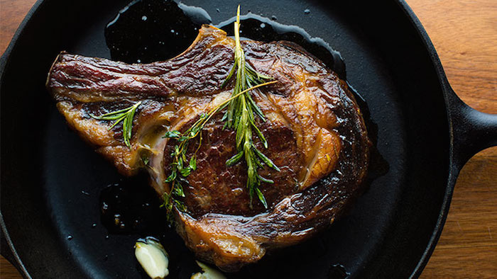

Steak

Steak is a staple which needs no description. A great steak should be an essential weapon in everyone's arsenal. This superior piece of protein can be a gift from above if done right. A versatile piece of meat, with countless ways of cooking it; steak has proven time and time again why it is the most sought after time of the week..."the day i'll have steak."
Ingredients
- 1 grass fed ribeye
- 2 stems of rosemary
- 5-7 strands of thyme
- 3 cloves of garlic
- 3 knobs of butter
- salt and pepper
- olive oil
Steps
- Take out the steak, ensuring it is at room temperature.
- Take out a cast iron skillet turn the heat to high.
- Salt and pepper each side of the steak, including the sides.
- When the cast iron skillet is nice and hot, drizzle olive oil onto the skillet. Put the steak on the skillet for 2:30 to 3 minutes, or desired doneness. (If you are scared of oil splattering at you, place the steak away from you; or drizzle the oil on the steak and place the oil side down on the skillet).
- After the time has passed,turn the heat down to medium, flip the steak over and let it cook for another minute.
- After the minute has passed, take 2 knobs of butter, the rosemary, thyme, and garlic and place them into an open area of the cast iron skillet
- Let the aromas and flavors of the garlic, rosemary, and thyme to be infused into the melted butter. Then take a spoon and baste, or pour, the butter onto the steak to help it retain moisture. Do this for around 2 minutes.
- After the 2 minutes have passed, place the steak onto a cutting board and place the sauted herbs onto the steak. Take the last knob of butter and place it directly onto the steak. Spoon the left over butter and juices from the cast iron skillet (if you are not going to use it) onto the knob of butter.
- Allow the steak to rest at least 5-10 minutes (depending on thickness) before cutting into it.
- Serve and Enjoy!